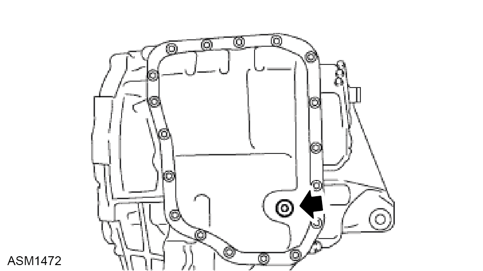
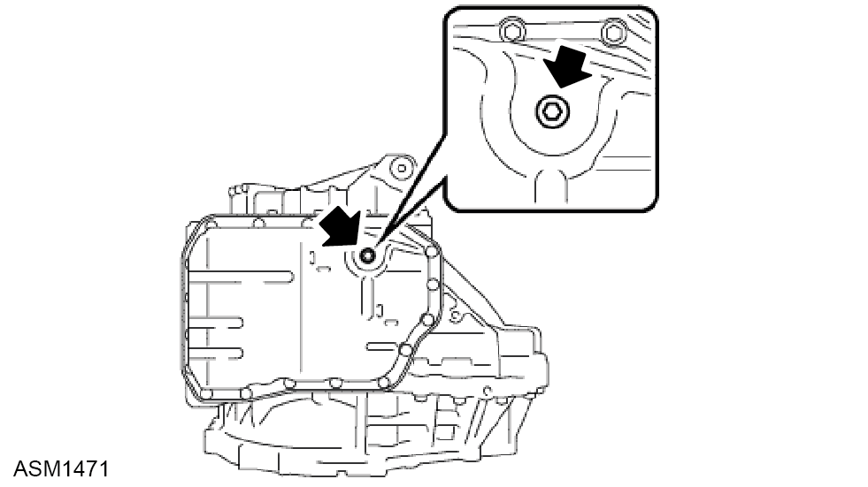
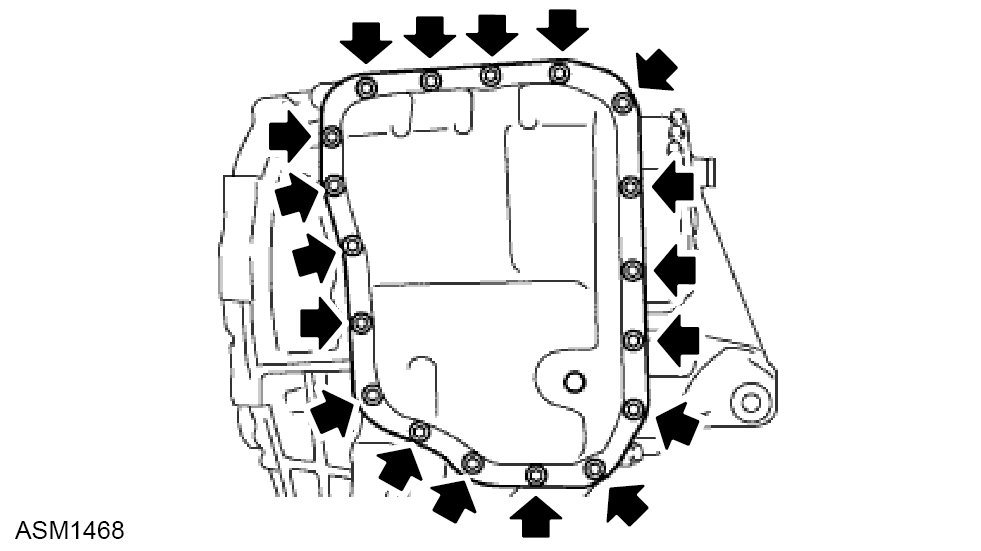
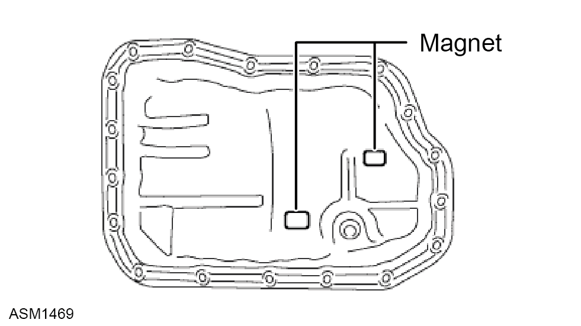
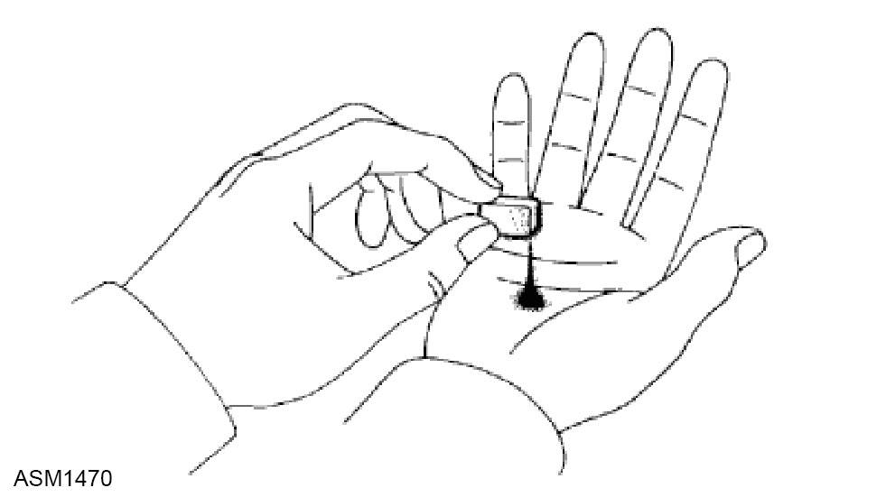

Oil Pan Gasket - V6
Print
Operation Code: 47.02.04-02
Removal
- Remove rear undertray. Refer to procedure.

- Remove overflow plug from oil pan sub-assembly and discard gasket.

- Remove No. 1 oil filler tube from automatic transaxle assembly.
- Allow transmission oil to drain.
 WARNING: Transmission oil is a toxic substance and can be lethal if ingested.
WARNING: Transmission oil is a toxic substance and can be lethal if ingested.
NOTE: Drain oil into a suitable container and dispose of appropriately.

- Remove the 18 bolts and oil pan from the transaxle.
 CAUTION: Some fluid will remain in the oil pan. remove all the pan bolts, and carefully remove the oil pan assembly.
CAUTION: Some fluid will remain in the oil pan. remove all the pan bolts, and carefully remove the oil pan assembly.
- Remove the gasket from the oil pan.

- Remove the 2 magnets from the oil pan.
- Examine particles in the oil pan.

- Collect any steel chips with the removed magnets. Lock carefully at the chips and particles in the oil pan and on the magnets to see the type of wear which might be found in the transaxle.
NOTE: Result:
Steel (magnetic):
Bearing, gear and plate wear
Brass (non-magnetic):
Bearing wear
Installation
- Install the 2 magnets in the automatic transaxle oil pan sub-assembly.
- Apply adhesive or equivalent to the 18 bolts.
- Install the automatic transaxle oil pan sub-assembly and a new gasket to the transaxle case with the 18 bolts. Torque 7.5 Nm.
CAUTION: In order to ensure proper sealing of the transmission pan bolts, apply adhesive to the bolts and install them within 10 minutes of adhesive application.
CAUTION: Completely remove any oil or grease from the contact surface of the transaxle case and oil pan sub-assembly with the gasket before installation.
- Install the No. 1 oil filler tube from the automatic transaxle assembly.
- Fill with approved transmission oil until it begins to flow out of the overflow plug hole.
- Install the overflow plug and a new gasket to the oil pan sub-assembly. Torque 40 Nm.